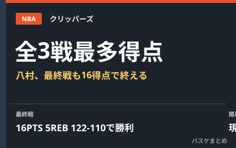

八村塁、プレシーズン全3戦チーム最多得点 最終戦も16得点で8年目開幕へ

夏にクリッパーズへ移籍した八村塁選手が、現地10月14日に行われたプレシーズン最終戦のナゲッツ戦で16得点5リバウンド1アシストを記録し、チームは122-110で勝利しました。前半は立ち上がりから6本連続でシュートを外す苦しい入りでしたが、後半に持ち直し2連続3ポイントも成功。この試合でプレシーズン全3試合チーム最多得点となり、平均17点という高い水準で新天地でのNBA8年目のシーズン開幕を迎えます。
最終戦は前半不調からの後半巻き返し、チームは122-110で勝利
八村選手はこの試合もスタメンで出場。試合開始から6本連続でシュートを外すなど前半は思うようなシュートタッチが見られませんでしたが、後半に持ち直し、3ポイントシュートを2本連続で成功させるなど調子を上げました。最終的に16得点5リバウンド1アシストを記録し、チームはナゲッツに122-110で勝利しています。
| 項目 | 内容 |
|---|---|
| 対戦相手 | デンバー・ナゲッツ（プレシーズン最終戦） |
| 試合日 | 現地10月14日 |
| 結果 | クリッパーズ 122-110 ナゲッツ |
| 八村選手のスタッツ | 16得点・5リバウンド・1アシスト |
プレシーズン全3試合でチーム最多得点、平均17点
八村選手はこの最終戦を含め、プレシーズン全3試合でチームトップスコアラーとなったと報じられています。平均得点は17点で、本人にとっても過去最高レベルの仕上がりとされています。夏にレイカーズからクリッパーズへ移籍した八村選手にとって、今回のプレシーズンは新チームでの役割やコンビネーションを確認する重要な期間となっていました。
レギュラーシーズン開幕は現地10月21日
クリッパーズのレギュラーシーズン開幕戦は現地10月21日（日本時間22日）に予定されています。八村選手にとってはNBA8年目のシーズンとなり、移籍後初めてとなる開幕戦でのパフォーマンスに注目が集まります。
Q. 八村選手の開幕戦はいつ見られる？
A. クリッパーズの開幕戦は現地10月21日（日本時間22日）に予定されています。放送・配信情報は各局・配信サービスの発表でご確認ください。
出典：スポニチアネックス「八村塁が16得点！開幕前最後のプレシーズンマッチで前半シュート不調も…後半一変！2連続3Pも決めた」（Yahoo!ニュース配信）／THE DIGEST「【NBA】八村塁、プレシーズン最終戦も16得点の躍動！全３試合でチーム最多、平均17点と過去最高の仕上がりで８年目の開幕へ＜DUNKSHOOT＞」（Yahoo!ニュース配信）ほか
https://news.yahoo.co.jp/articles/080a5017bec0042b302fb4c8fad103251d1343bd
https://news.yahoo.co.jp/articles/d04934f04d67ed1992f8face815d69b51b950771